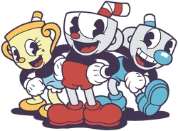

Cuphead es un juego de acción y plataformas, famoso por su estética inspirada en los dibujos animados de los años 30. Controlas a Cuphead (y Mugman, en modo cooperativo) en una aventura para recuperar sus almas tras perder una apuesta con el Diablo. ¡Prepárate para combates contra jefes intensos y escenarios animados con gran personalidad!
Cuphead: Valiente e impulsivo, el alma del juego.

Mugman: Cauteloso pero leal, acompaña a su hermano.
Miss Chalice: Nueva aliada con habilidades únicas.
El Diablo: Antagonista principal y dueño del casino.
El objetivo es derrotar a todos los jefes de cada isla para recuperar los contratos de sus almas. Supera fases complicadas, mejora tus habilidades, y enfréntate finalmente al Rey Dado y al mismísimo Diablo. ¡Todo con un toque artístico inolvidable y una dificultad desafiante!